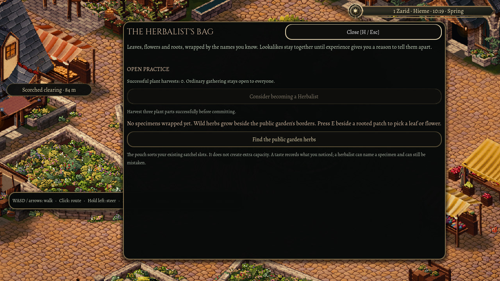
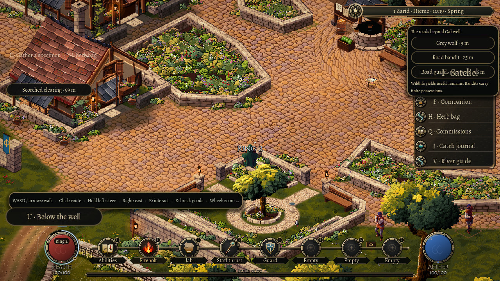

1 November 2026
The quiet work counts
Gathering a plant should be part of a character's life, even before they choose a profession.
Oakwell was remembering successful harvests for the Herbalist commitment, but the ordinary practice behind those acts was missing. A successful pick now teaches through the existing plant-handling rules as well. Handling the herb matters alongside the tending and cutting involved in taking it.

Your major profession remains a separate choice. These everyday gains happen while you are undecided and continue after committing. Repeated work grows familiar, following the same rules as other everyday practice.

A full satchel is an unsuccessful harvest. The part stays on the plant, and the failed attempt earns neither ordinary practice nor progress toward a profession. Locating or looking at a plant does not count as picking it.
Returning to Oakwell keeps the gathered specimens, the harvest history and that ordinary learning in the same character. Knowing more through work does not magically settle a doubtful plant name.
Special harvest methods and the Apothecary's remedies still have their own work ahead. This pass makes the small work already in the town count toward the person doing it.